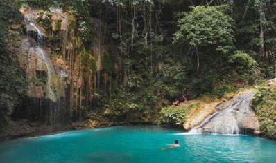

Day 1(01/02/2024): Singapore
12:30PM - 6:00AM
- National Gallery Singapore
- Gardens by the Bay
- Esplanade Theatres on the Bay
- Orchard Road Shopping
Day 2 (02/02/2024): Moalboal
10:00AM Cebu
Đặt khách sạn tại Moalboal
- Đáp máy bay tại Mactan International Airpor tại Cebu
- Di chuyển Grab 30-40 phút đến trạm xe bus: Cebu South Bus Terminal
- Bắt xe bus đến Moalboal (Giá khoảng $4/pax)
- Bắt xe Habal-Habal hoặc Grab về khách sạn
- Check in khách sạn và đi ăn
- Tắm biển Whitebeach cách Moalboal 17 phút
- Chụp hình hoàng hôn trên biển và ăn tối
- Di chuyển về khách sạn
Day 3 (03/02/2024): Moalboal
Đặt khách sạn tại Moalboal
Moalboal------- 35 phút -------Thác Kawasan
- Ăn sáng tại khách sạn hoặc ra ngoài ăn đồ local
- Di chuyển đến thác Kawasan: bơi và nhảy thác
- Chụp ảnh gia đình tại thác Kawasan
- Mang theo thức ăn nhẹ, nước uống và dép crocs
- Di chuyển về khách sạn tại Moalboal
- Ăn tối
Day 4 (04/02/2024): Moalboal
Đặt khách sạn tại Oslob
Moalboal------- 1:15 ------- Osmena Peak ------- 36 phút ------- Thác Cambais ------- 1:40
-------
Oslob
- Ăn sáng tại khách sạn hoặc chọn đồ ăn local
- Leo núi Osmena Peak ( khoảng 20-25 phút)
- Chụp hình gia đình tại Osmena Peak
- Di chuyển đến thác Cambais
- Tắm thác và chụp ảnh
- Di chuyển về Oslob để hôm sau bơi với cá mập

Day 5 (05/02/2024): Oslob
Đặt khách sạn tại Cebu hoặc gần sân bay Mactan
Oslob ------- 4 tiếng ------- Cebu City
- Ăn sáng tại khách sạn hoặc tùy chọn đồ ăn local
- Bơi cùng Whaleshark và chụp ảnh
- Ăn trưa tại nhà hàng gần đó
- Di chuyển đến thác Tumalog (Khách khu vực Whaleshark 10 phút)
- Bơi và chụp ảnh tại thác
- Di chuyển về Cebu hoặc gần sân bay Mactan để hôm sau bay về Manila
Day 6 (06/02/2024): Cebu to Manila
Chuyến bay khởi hành lúc 2:35PM
Cebu City ------- 1 tiếng ------- Mactan Airport
- Ăn sáng tại khách sạn hoặc đi ăn đồ local
- Vì chỉ có vài tiếng buổi sáng ở Cebu City sau đó
sẽ phải di chuyển ra sân bay nên sẽ lựa chọn 1 trong
các điểm tham quan dưới đây để tham quan tại Cebu
- Magellan's Cross
- Santo Nino Basilica
- Fort San Pedro
- Taoist Temple
- Cebu Cathedral
- Temple Of Leah
- 11:00AM sẽ di chuyển về sân bay Mactan để bay về Manila lúc 2:35PM
- Tại Manila: Từ 4:30-8:00PM sẽ khám phá Manila (Ăn tối và chơi tại chợ đêm)
- 10:50PM máy báy cất cánh về Ho CHi Minh